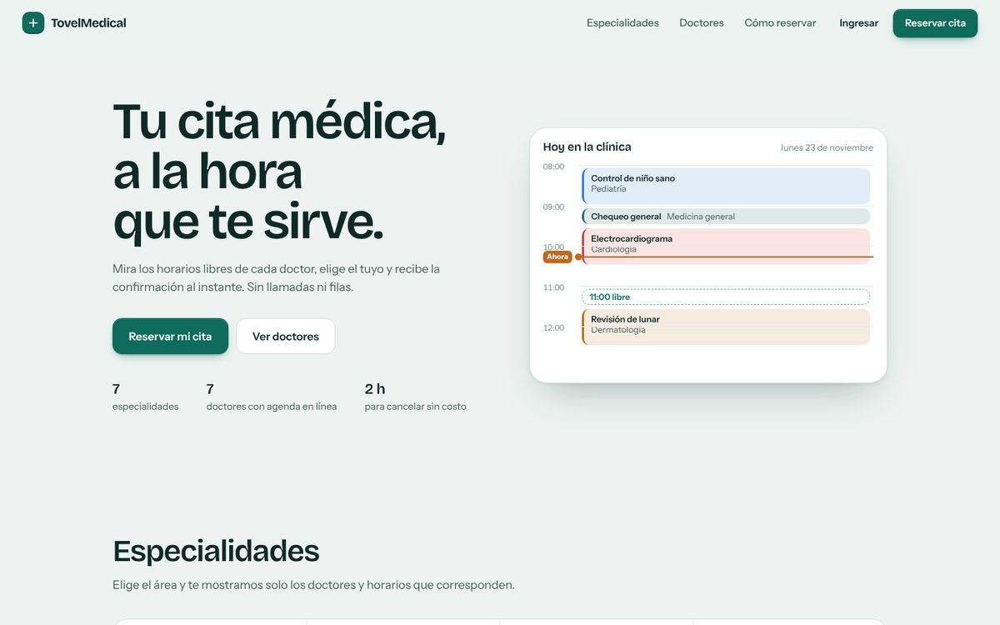
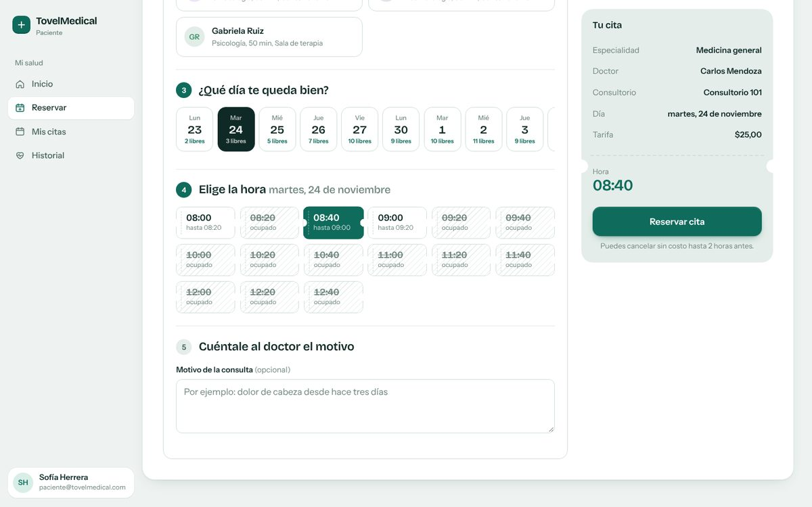
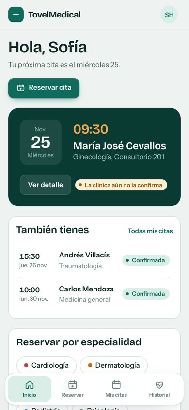
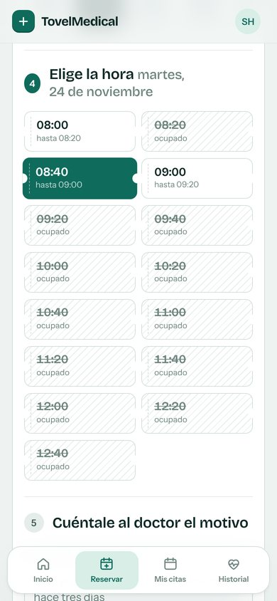
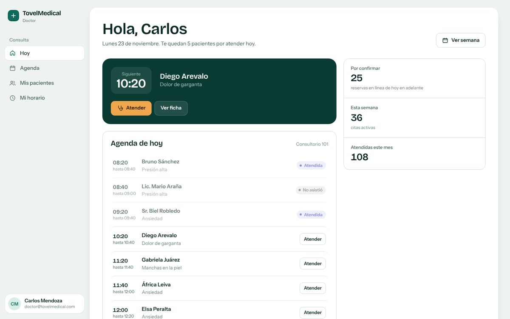
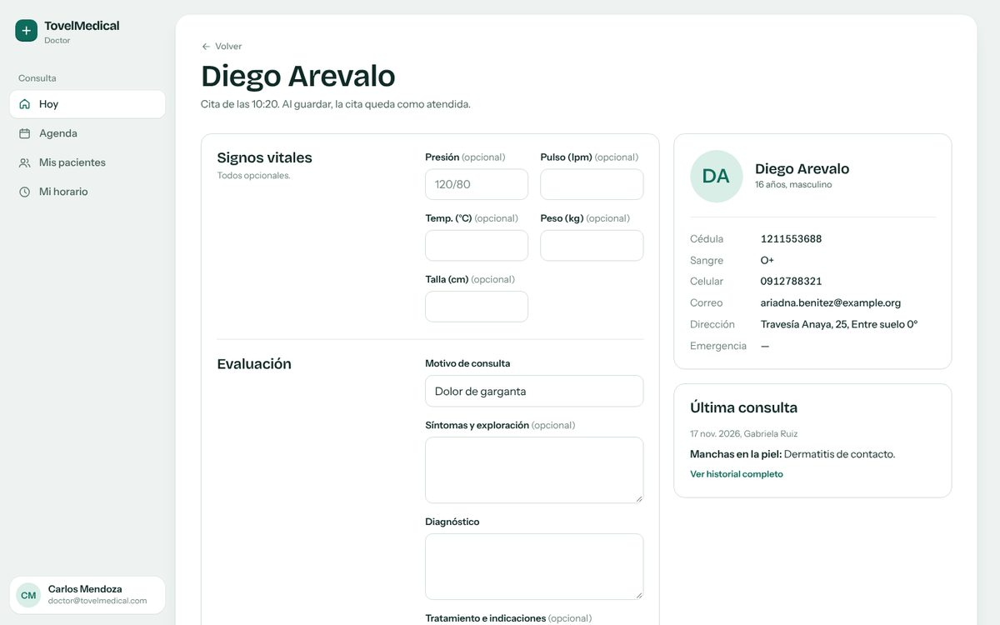
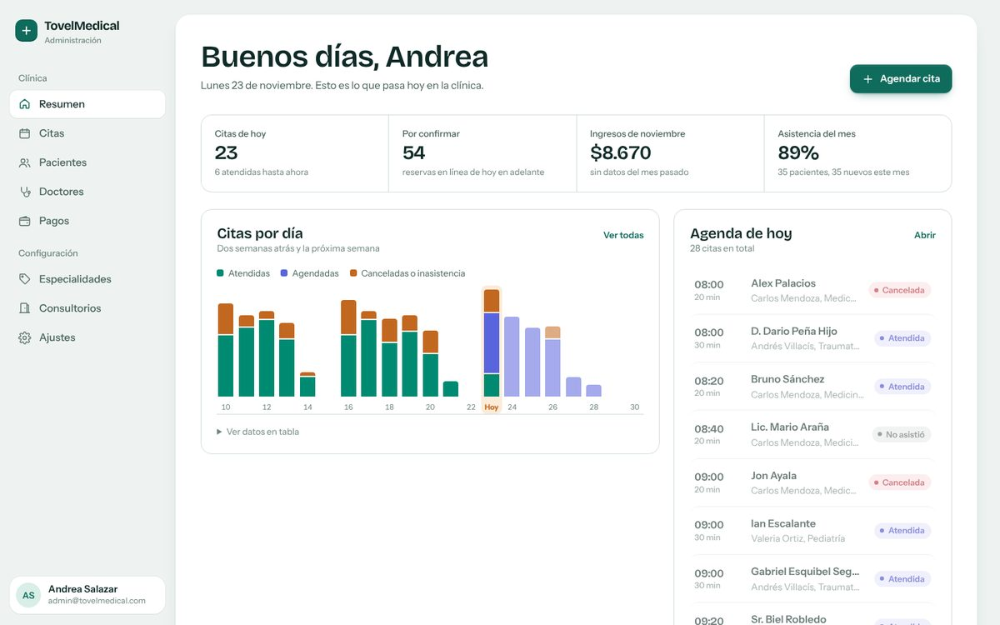
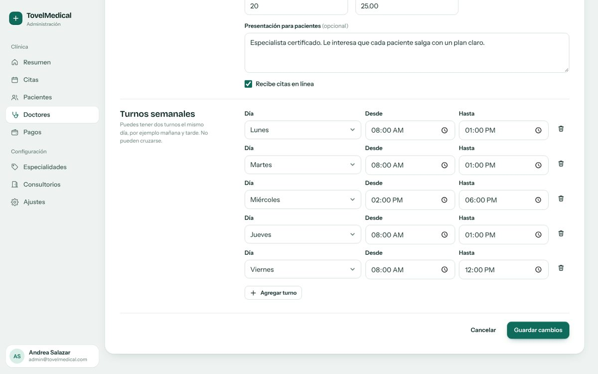
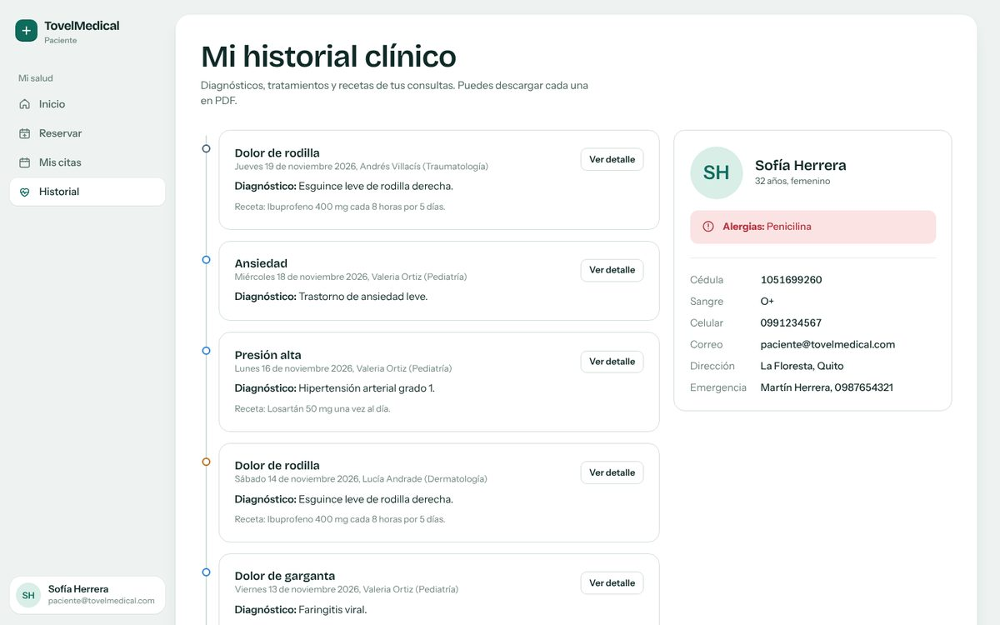

ANTES
Todo por teléfono
- Llamadas para preguntar qué horarios quedaban
- Dos pacientes anotados a la misma hora con el mismo doctor
- Cancelaciones de último minuto que nadie registraba
- Diagnósticos y recetas en papel, difíciles de encontrar
Un sistema web para clínicas y consultorios: el paciente reserva en línea con los horarios que de verdad están libres, el doctor atiende y registra la consulta, y la clínica lo controla todo desde su panel.
El reto
Una clínica con varios doctores agendaba por llamada. La recepción pasaba el día al teléfono, los turnos se cruzaban y el historial de cada paciente estaba repartido en carpetas. Hacía falta que el paciente reservara solo, sin errores, y que cada consulta quedara registrada.
ANTES
AHORA
Cómo funciona
Así viaja una cita, en vivo.
Elige su hora
Aparta el bloque
La ve en su agenda
Queda en su historial
Mi historial
Consultas y recetas
El paciente ve especialidad, doctor y los horarios libres del día que prefiera.
El sistema confirma que nadie más lo tomó y que el paciente no tiene otra cita.
La cita aparece al instante en su día, con el motivo y la ficha del paciente.
El doctor registra diagnóstico y receta; el paciente la descarga en PDF.
Recorrido
Las pantallas reales de los tres perfiles, con datos de demostración.
01 · Portada pública
La página de inicio presenta especialidades y doctores, y muestra los días en que atiende cada uno.

02 · Reserva del paciente
Especialidad, doctor, día, hora y motivo. Cada horario es un ticket: los ocupados aparecen tachados y no se pueden elegir.

03 · En el celular
En el teléfono la app tiene barra de pestañas abajo, botones grandes y su próxima cita siempre a la vista.


04 · Agenda del doctor
El doctor entra y ve a su siguiente paciente con sus alergias, el resto del día y cuántas reservas quedan por confirmar.

05 · Atender una consulta
Signos vitales, síntomas, diagnóstico, tratamiento y receta. Al guardar, la cita queda como atendida y todo pasa al historial.

06 · Panel de la clínica
La administración ve las citas de hoy, lo que falta confirmar, los ingresos del mes y la carga de cada doctor.

07 · Doctores y turnos
Se registra al doctor con su especialidad, consultorio, duración de cita y tarifa, y se le asignan sus turnos de la semana.

08 · Historial clínico
El paciente ve su historial completo y descarga cada consulta en PDF. El doctor ve el historial de sus pacientes antes de atenderlos.

Detalles
Cuando dos personas eligen la misma hora al mismo tiempo, solo una se queda con ella; la otra elige otro horario.
El paciente cancela hasta las horas que defina la clínica. El horario se libera para otra persona.
Un paciente solo ve sus citas; un doctor, a sus pacientes; la clínica, todo.
El registro revisa el dígito verificador de la cédula ecuatoriana para evitar errores.
Cobros por consulta con su estado y exportación de citas para abrir en Excel.
Se adapta al tema del teléfono y funciona igual de bien en la computadora de la recepción.
Lo configuramos con tus doctores, especialidades y horarios. Pruébalo primero en la demo con datos ficticios.